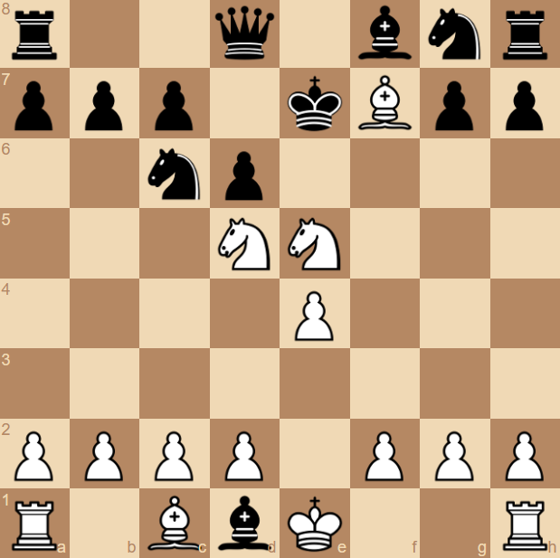
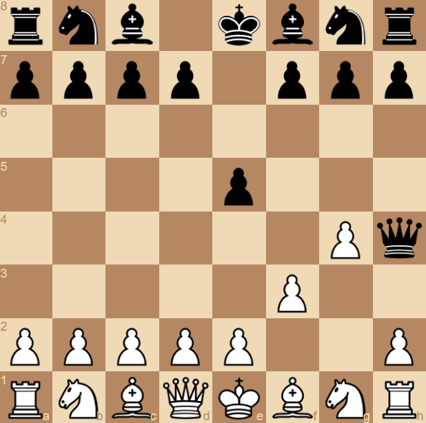

Ouvertures
Mats
Entrainement
Collection
Sites Utiles
Autre
Ouvertures
Mats
Entrainement
Collection
Sites Utiles
Autre
|
Le Mat de Legal Le Mat de Legal est un mat qui s'effectue au début de la partie, il repose sur l'appât du gain de l'adversaire en lui donnant délibérément sa Reine pour pousser son fou dans le camp adverse et achever l'ennemi avec un cavalier. |

Voir l'Animation |
|
Le Mat du sot Ceci est le moyen le plus rapide de gagner une partie aux échecs (2 tours), ce mat n'est faisable que sous certaines conditions et surtout contre un adversaire qui n'y connait rien aux écehcs |

Voir l'Animation |